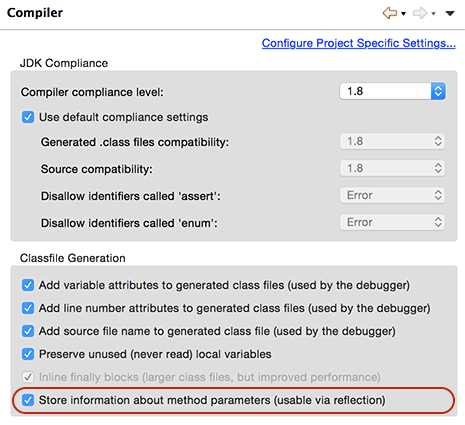

jxrest requires JDK 1.8 or higher, and your project MUST be compiled by JDK 1.8 or higher.
You MUST also set compiler options:
If you use javac or Ant to compile your source code, make sure add -parameters to javac.
If you use Maven to compile your source code, add following configurations to your pom.xml:
<?xml version="1.0" encoding="UTF-8"?>
<project xmlns="http://maven.apache.org/POM/4.0.0" xmlns:xsi="http://www.w3.org/2001/XMLSchema-instance"
xsi:schemaLocation="http://maven.apache.org/POM/4.0.0 http://maven.apache.org/xsd/maven-4.0.0.xsd">
<modelVersion>4.0.0</modelVersion>
...
<build>
<plugins>
<plugin>
<groupId>org.apache.maven.plugins</groupId>
<artifactId>maven-compiler-plugin</artifactId>
<version>3.2</version>
<configuration>
<source>1.8</source>
<target>1.8</target>
<compilerArgument>-parameters</compilerArgument>
</configuration>
</plugin>
... other plugins
</plugins>
</build>
</project>
If you use Eclipse to compile your source code, make sure enable the option in Eclipse preferences:

Make sure the option Store information about method parameters (usable via reflection) is checked.
jxrest only require a class that contains several methods to handle REST API.
Suppose you have a UserHandler that handles user of query, creation, updating and deleting:
public class UserHandler {
long nextId = 0;
Map<Long, User> users = new ConcurrentHashMap<Long, User>();
long nextId() {
nextId ++;
return nextId;
}
@GET
@Path("/users")
Object getUsers() {
return users.values().toArray(new User[0]);
}
@GET
@Path("/users/:id")
public User getUser(long id) {
return users.get(id);
}
@PUT
@Path("/users")
User createUser(User user) {
user.id = nextId();
users.put(user.id, user);
return user;
}
@POST
@Path("/users/:id")
public User updateUser(long id, User user) {
User exist = users.get(id);
if (exist == null) {
throw new ApiException("entity:notfound", "User");
}
exist.name = user.name;
exist.email = user.email;
exist.password = user.password;
return exist;
}
@DELETE
@Path("/users/:id")
private boolean deleteUser(long id) {
User exist = users.remove(id);
return exist != null;
}
}
And you want to use URL /api/* to handle all REST APIs. Here is an example of web.xml:
<?xml version="1.0"?>
<web-app xmlns:xsi="http://www.w3.org/2001/XMLSchema-instance"
xmlns="http://java.sun.com/xml/ns/javaee"
xmlns:web="http://java.sun.com/xml/ns/javaee/web-app_3_0.xsd"
xsi:schemaLocation="http://java.sun.com/xml/ns/javaee
http://java.sun.com/xml/ns/javaee/web-app_3_0.xsd"
id="SampleWebAppID"
version="3.0">
<servlet>
<servlet-name>restApiServlet</servlet-name>
<servlet-class>com.itranswarp.jxrest.RestApiServlet</servlet-class>
<init-param>
<param-name>handlers</param-name>
<param-value>your.UserHandler</param-value>
</init-param>
<init-param>
<param-name>urlPrefix</param-name>
<param-value>/api</param-value>
</init-param>
<load-on-startup>0</load-on-startup>
</servlet>
<servlet-mapping>
<servlet-name>restApiServlet</servlet-name>
<url-pattern>/api/*</url-pattern>
</servlet-mapping>
</web-app>
The built-in com.itranswarp.jxrest.RestApiServlet will handle all API request of /api/*.
Note that the restApiServlet has a configuration of urlPrefix with value /api, so a request
from client POST http://localhost/api/users/123 will first match the servlet mapping /api,
and restApiServlet will remove the prefix /api and use the left /users/123 to match the
@Path which defined by method updateUser(). So finally the updateUser() is invoked, and its
return value will be serialized as JSON response.
You can define as many handlers as you wish, each handler is seperated by ,:
<init-param>
<param-name>handlers</param-name>
<param-value>your.UserHandler, your.BookHandler, your.other.handlers</param-value>
</init-param>
Package name is also accepted and jxrest will scan the package to find all handlers automatically, but sub-packages are not included.
Path variables are defined by pattern :varName, and jxrest tries to find the method variable with
the same name when invoke the method:
@GET
@Path("/path/to/:groupId/:userId")
Object find(String groupId, int userId) {
...
}
Path varable name cannot have _, for it is a limitation of group name in regular express.
Primitive type (e.g. int) and its wrapper class (e.g. Integer) are allowed.
The method which handles a REST API can have one argument to accept a JSON object:
@POST
@Path("/path/to/post/:id")
Object update(int id, User user) {
...
}
jxrest tries to convert JSON to your defined type. You can use any standard JavaBean, or Map<String, Object>.
NOTE: method with @GET cannot accept the JSON object.
It is convenient if the method can get query strings directly instead of calling HttpServletRequest.getParameter().
jxrest allows you define an argument with type Map<String, String> and name query:
@GET
@Path("/path/get/:groupId")
Object findUsers(String groupId, Map<String, String> query) {
...
}
If you want to access the HttpServletRequest and HttpServletResponse object, you can add arguments to your method, just make sure the argument type is correct:
@GET
@Path("/path/get/:groupId")
Object findUsers(String groupId, HttpServletRequest req, HttpServletResponse resp) {
...
}
jxrest can recognize your method and its arguments, but there is no order of the arguments required. The following definition is OK:
@GET
@Path("/path/get/:groupId")
Object findUsers(HttpServletResponse resp, Map<String, String> query, String groupId, HttpServletRequest req) {
...
}
Using jxrest as JSON-based API framework is really great. Now you can concentrate on your business logic, and you can test your business logic much easier. Your handler is just normal class. It is not depends on jxrest, it only references a few annotations.
Cool!
Michael Liao - Copyright©2015.